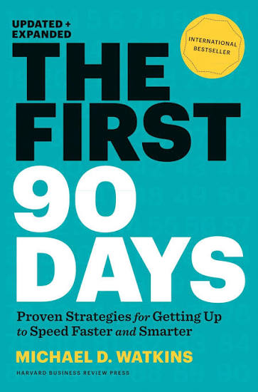

The First 90 Days by Michael D. Watkins is a structured playbook for the first months in a new leadership role. This is the Updated and Expanded edition (Harvard Business Review Press, the tenth-anniversary edition per the publisher listing at IMD). The cover on this page is that edition.
Its backbone is a set of core challenges, one per chapter: prepare yourself, accelerate your learning, match your strategy to the situation, negotiate success, secure early wins, achieve alignment, build your team, and create alliances, followed by chapters on keeping your balance and on helping everyone else through their own transitions. Almost every chapter ends in a worksheet, table or diagram.
Two diagrams frame the whole book. The break-even chart shows value produced against value consumed over the first months. A pair of cycle diagrams show how inadequate learning, bad decisions and lost credibility feed on each other, while focused learning, informed strategy and early wins build on each other. I rate it more as a working manual than a narrative: it is easy to dip into and harder to read straight through.
This edition opens with a preface for the tenth-anniversary edition, which the publisher listing at IMD describes as adding a view of careers as a series of transitions, updated statistics and new tools. The introduction sets up the book's three framing diagrams.
Verified from the companion PDF: the break-even chart (Figure I-1), the vicious cycle (I-2) and the virtuous cycle (I-3), a Transition Risk Assessment (Table I-1) and a map of key transition milestones (Figure I-4). The risk assessment lists twelve kinds of transition, such as a new industry, a new company, a promotion, leading former peers, moving geographically, doing two jobs at once, or entering an organization already in the middle of major change. You tick the ones that apply and rate each from 1 to 10 for difficulty.
About the mental shift of leaving the old role behind. Table 9-1 phrases the question as adopting the right mind-set for the new job and letting go of the past.
The tools for this chapter, per the companion PDF: a table of core promotion challenges (broader impact horizon, more complexity and ambiguity, tougher politics, more distance from the front line, more scrutiny, each paired with a response such as delegating more deeply or communicating more formally); a culture pyramid (symbols and language at the visible top, norms in the middle, fundamental assumptions hidden at the base); four onboarding checklists (business orientation, stakeholder connection, expectations alignment, cultural adaptation); and two self-assessments of which kinds of problems you enjoy (technical, political, cultural).
Treats learning as something to plan: what you need to learn, from whom, and how to speed it up. A diagram of sources of knowledge places people such as top management, customers, distributors, suppliers, analysts, salespeople, allies, integrators, historians and builders around the organization's boundary.
A table of structured learning methods covers climate and satisfaction surveys, structured interviews with horizontal or vertical slices of the organization, focus groups, analysis of critical past decisions, process analysis, plant and market tours, and pilot projects, each with what it is good for and which managers it suits.
Introduces STARS: start-up, turnaround, accelerated growth, realignment and sustaining success. A table sets out the challenges and opportunities of each. A second table has you list the projects, products or units you own, assign each a STARS situation and allocate your effort across them, then check whether your own preferences are driving the allocation.
A third table contrasts turnarounds and realignments across six steps (organize to learn, define strategic intent, set priorities, build the leadership team, secure early wins, create alliances). A fourth reports survey results on which situation people find most challenging and which they prefer: realignment was named most challenging by 30.3% and start-up most preferred by 47.1%.
Focused on the relationship with your new boss. The Five Conversations table gives an agenda: situation (how does your boss see your STARS portfolio), expectations, resources, style, and personal development. For each you record the current status and priorities for the next 30 days.
A second table lists typical roles for your boss by STARS situation (for example, support for tough personnel calls in a turnaround, or constant reality testing in sustaining success), and a third repeats the five conversations for each of your team members.
Starts from a waves-of-change diagram: four stages (transition, immersion, reshaping, consolidation) plotted as the intensity of change you institute across about 18 months. A table of problematic behaviour patterns lists symptoms of missing focus, standards, teamwork and urgency; its text did not extract cleanly from the PDF, so I am not summarizing its entries.
The practical tools are an early-wins evaluation tool (four questions scored 0 to 4, so 0 to 16 in total, used to compare candidate focal points and not as a precise measure), the FOGLAMP project checklist (focus, oversight, goals, leadership, abilities, means, process), and a diagnostic flowchart for managing change that asks in turn about awareness, diagnosis, vision, plan and support, with a different action if a step is missing.
Looks at the organization as an architecture: strategic direction, structure, core processes, skill bases and the internal climate and culture, sitting inside an external environment of customers, competitors, suppliers, distributors, investors, media, governments and NGOs.
A process-analysis table sorts activities into production or service-delivery, support, and business processes, using a credit-card business as the worked example, and a process map shows one order passing across customer relations, accounts receivable and fulfilment. The idea, as I read it, is to find where the pieces do not fit together.
Links organizational alignment with restructuring the team: assess what is, decide what should be, plan how to get there, then implement. An assessment table has you divide 100 points across six evaluative criteria (competence, judgment, energy, focus, relationships, trust) and mark any that are threshold issues.
A diagram contrasts push tools (incentives, reporting systems, planning processes, procedures) with pull tools (mission statement, shared vision, teamwork). A final table gathers inspirations for vision statements, grouped by what motivates people: commitment to an ideal, great results, contribution, being part of a team, individual growth, control of one's destiny, and trust and integrity.
About influence beyond formal authority. Tools: a table for identifying influential players (who, what you need from them, and when); an influence diagram built around a worked example with a fictional manager, showing who supports, who is undecided, who opposes, and where a winning or blocking alliance might form; and a table for the motivations, driving and restraining forces, and perceived alternatives of pivotal players.
A framing-arguments table uses the classical triad: logos (data and reasoned argument), ethos (principles, policies and other rules) and pathos (emotions and meaning), each with questions to ask about the person you want to persuade.
The personal chapter. A Yerkes-Dodson performance curve plots performance against stress, from peak performance to "going over the top" and burnout. An assessment of core challenges turns the eight earlier challenges into diagnostic questions you ask yourself.
A table of adviser types names technical advisers, cultural interpreters and political counselors, and a grid asks you to fill in internal and external names for each. Summary sites describe the chapter as being about disciplined execution and a support system.
Turns from your own transition to everybody else's. The previous page called this "Expedite Everyone"; I could not confirm that wording, and one study outline gives "Accelerate Everyone". Treat the title as unverified. The companion PDF shows the tools: a Transition Heat Map, a table of reasons transitions fail (some for all transitions, some specific to promotion or onboarding), a comparison of transition coaching and developmental coaching, a diagram linking recruiting and onboarding, and a development grid.
The heat map lists organizational units, notes the major change events in each (rapid growth, turnaround, acquisition) and rates the intensity of onboarding, promotion, geographic moves and lateral moves. The development grid charts the functions you have worked in against the five STARS situations to show blank cells, which the book frames as possible blind spots.
The book's central pair of ideas: first diagnose which situation you are in (STARS), then negotiate your boss's support for that situation (the Five Conversations). The definitions, challenges, opportunities and boss-support roles below follow the book's own tables, as reproduced in the companion PDF. The sample questions, scenarios and slider tool are my own illustrations, not the book's.
Getting a new business or initiative off the ground
Saving something widely acknowledged to be in serious trouble
Managing a rapidly expanding business
Reenergizing a once-successful organization that now faces problems
Preserving the vitality of a successful organization and taking it further
Help getting needed resources quickly, clear measurable goals, guidance at strategic breakpoints, and help staying focused (Table 4-2). The other four situations start from this same list and add to it.
The risk is not lack of ideas but lack of edges. Without boundaries, every request looks equally urgent, so the boss conversation about goals and focus matters more here than in any other case.
Everything in start-up, plus support for tough personnel calls, for correcting the external image, and for cutting deeply enough and fast enough.
This is the situation where acting fast is the plan, not the mistake. The failure mode is under-cutting out of kindness and having to do it twice.
Everything in start-up, plus support for getting investment to fuel growth at the right rate in the right ways, and help making the case for new systems and structures.
Growth hides weak systems because the numbers keep going up. The case for structure has to be made while things look fine, which is why the boss conversation about investment comes early.
Everything in start-up, plus help making the case for change, especially if you are from outside.
In the book's survey (Table 3-4), realignment was the situation most often called the most challenging, at 30.3%, while only 12.7% said they would prefer it. The book contrasts this with start-up: 13.5% called it most challenging and 47.1% most preferred. I do not know the sample or how the survey was run, so treat the percentages as the author's data, not as established fact.
Everything in start-up, plus constant reality testing (is this really sustaining success, or a realignment in disguise?), support for playing good defense, and help finding ways to reach a new level.
The trap is mislabelling. A leader who walks into a slowly declining unit and calls it "healthy" is in the wrong playbook, which is why the book has the boss test that label.
How does your boss see your STARS portfolio?
What are you expected to accomplish?
What resources do you have at your disposal?
How can you best work together?
What is going well, and what do you need to do differently?
Treating it as a single onboarding chat. The table format, with a column for the next 30 days, suggests the book expects you to return to it. Skipping the situation conversation is the costly omission, because everything else depends on the label you agree.
| Start-up | Turnaround | Accelerated growth | Realignment | Sustaining success | |
|---|---|---|---|---|---|
| In one line | Build from scratch | Save what is in serious trouble | Manage rapid expansion | Reenergize a once-successful organization | Keep a successful one healthy and take it further |
| A key challenge | No framework or boundaries | Deciding fast and cutting deep enough | Systems that let it scale | Convincing people change is needed | Follow a well-regarded predecessor |
| A key opportunity | Do it right from the start | Everyone knows change is needed | Growth motivates people | Real pockets of strength | A strong team and track record |
| Boss support, beyond the basics | Resources, clear goals, focus | Tough personnel calls, deep cuts | Investment, case for new systems | Making the case for change | Reality testing, playing defense |
| Turnaround | Realignment | |
|---|---|---|
| 1 Organize to learn | Technical learning; prepare to act quickly | Cultural and political learning; prepare to act deliberately |
| 2 Strategic intent | Prune non-core businesses | Hone and leverage existing capabilities; stimulate innovation |
| 3 A-item priorities | Faster, bolder moves; focus on strategy and structure | Slower, more deliberate moves; focus on systems, skills and culture |
| 4 Leadership team | Clean house at the top; recruit external talent | Make a few important changes; promote high potentials from within |
| 5 Early wins | Shift the mind-set from despair to hope | Shift the mind-set from denial to awareness |
| 6 Alliances | Gain support from bosses and stakeholders to invest the required resources | Build alliances sideways and down to ensure better execution |
Two points to hold on to. The situations are not interchangeable, and the two that look most alike (turnaround and realignment) call for nearly opposite pacing. And your portfolio is usually a mix, so the real discipline is allocating your effort rather than picking one label.
A tool of my own, not the book's (the book's version is the portfolio table in Chapter 3). Slide each statement from 0 (not true of my new remit) to 10 (very true).
Five scenarios, all invented by me. Tap the STARS situation each one really is.
The book's practical tools gathered in one place. Each is a table or figure in the companion PDF. The practice plan at the bottom is my own suggestion.
Twelve kinds of transition to tick and rate from 1 to 10 for difficulty; the total is your Transition Risk Index. Useful for seeing which dimensions to focus on.
List the projects, processes or units you own, assign each a STARS situation, and split 100% of your next-90-days effort across them. The table then asks which situation you most prefer, to check your preferences are not setting your priorities.
Four questions scored 0 to 4, giving 0 to 16, to compare candidate wins. The book itself says to use common sense: a zero on the first question outweighs good scores on the rest.
Break-even point.
Vicious and virtuous cycles.
STARS.
The five conversations.
FOGLAMP.
Transition Heat Map.
Paraphrases, not direct quotes.
Work out which situation you are really in before choosing how to lead.
Do not leave the relationship with your boss to chance.
Score a candidate win before you commit to it.
Your own transition is one of many in the organization.
| Category | Claude | Dan | Why Claude scored it that way |
|---|---|---|---|
| Ideas | 4.0 | 3.0 | STARS and the break-even framing are memorable and widely cited. Several other tools (the logos, ethos and pathos triad, the stress curve) are borrowed and applied. |
| Readability | 3.5 | 2.5 | Clearly organized, one challenge per chapter, but about 250 pages of tables and frameworks. One reviewer found it dull and stopped a quarter of the way in. |
| Actionability | 4.5 | 3.0 | Almost every chapter ends in a fill-in worksheet, and the companion PDF collects them. This is the book's strongest point. |
| Evidence | 3.0 | 3.0 | Support comes mainly from the author's experience, case examples and one preference survey whose sample I could not check. I did not verify the cases. |
| Category average | 3.75 | 2.88 | Claude's overall is 3.8. There is no verified Goodreads average to compare against; a search snippet suggested about 3.85, which I could not open, so I will not lean on it. If that figure is right, the two are within 0.1. Dan's overall of 3.0 sits just 0.12 above his own category average of 2.88. He scores below Claude on Ideas, Readability and Actionability (3.0 vs 4.0, 2.5 vs 3.5, and 3.0 vs 4.5), with the biggest gap on Actionability, and matches Claude on Evidence (3.0). |
Categories are the same four used for every review: Ideas, Readability, Actionability, Evidence. Dan's column holds his own scores.
What you may have missed: the survey on which the "realignment is hardest, start-up is preferred" finding rests is presented as the author's data; the companion tools PDF gives no sample size or method, so it is a vivid but unchecked statistic.
Also, the 90 days in the title is a framing. The book's own waves-of-change diagram (Figure 5-1) spans about 18 months, with reshaping and consolidation coming after the early learning stages. That is my reading of the diagram, not a published criticism. And the one harshly negative review I read stopped about a quarter of the way through, so it says little about the later chapters.
Dan rates The First 90 Days 3 out of 5. He had high hopes for it, but found that many of its concepts amount to almost bulldozing your way through the first 90 days to get as much return on investment as possible, and he doesn't wholeheartedly agree with that.
His biggest takeaway was the people side: getting to know people and understanding who they are, being a team player, and knowing that you are not the most important person on the team, nor the one who understands things the most, so you need to rely on others.
He rates Ideas 3. He struggled to get through it (readability 2.5). Actionability is 3, and he scored Evidence 3 because there are a lot of compelling arguments. His summary: glad he read it, but not one he will go back to in order to stay on top of things. It was good to read once and take the knowledge from it.
Written up from Dan's own words (11 Nov 2026). He gave category scores but no overall number, and chose 3.0 as the overall when asked. His view stands apart from the Claude and reader views above.
Name the situation before you pick the playbook. STARS turns "be a good leader" into a question you can answer in an afternoon: which of my responsibilities are start-ups, turnarounds, growth, realignments or sustaining success, and which of them do I have a bias toward? Everything else in the book, from the boss agenda to the choice of early wins, changes depending on the answer.
The First 90 Days is best read as a manual: a set of diagnostics and worksheets organized around the first months of a role. Its strengths are breadth, structure and practicality. Its weaker side is thin independent evidence and a density that rewards dipping in over reading straight through.
Use the whole book once for the map, then return to a chapter's tools when you need them: STARS before you plan, the five conversations before you meet your boss, the early-wins scoring before you commit. Pair it with a critical eye on the survey and case material.